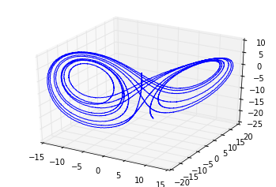
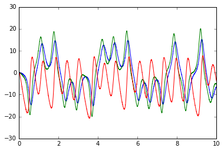

The Lorenz chaotic attractor¶
This example shows the construction of a classic chaotic dynamical system: the Lorenz “butterfly” attractor. The equations are:
\[\begin{split}\dot{x}_0 = \sigma(x_1 - x_0) \\\
\dot{x}_1 = x_0 (\rho - x_2) - x_1 \\\
\dot{x}_2 = x_0 x_1 - \beta x_2\end{split}\]
Since \(x_2\) is centered around approximately \(\rho\), and since NEF ensembles are usually optimized to represent values within a certain radius of the origin, we substitute \(x_2' = x_2 - \rho\), giving these equations:
\[\begin{split}\dot{x}_0 = \sigma(x_1 - x_0) \\\
\dot{x}_1 = - x_0 x_2' - x_1\\\
\dot{x}_2' = x_0 x_1 - \beta (x_2' + \rho) - \rho\end{split}\]
For more information, see http://compneuro.uwaterloo.ca/publications/eliasmith2005b.html “Chris Eliasmith. A unified approach to building and controlling spiking attractor networks. Neural computation, 7(6):1276-1314, 2005.”
In [1]:
import matplotlib.pyplot as plt
%matplotlib inline
import nengo
%load_ext nengo.ipynb
<IPython.core.display.Javascript object>
In [2]:
tau = 0.1
sigma = 10
beta = 8.0/3
rho = 28
def feedback(x):
dx0 = -sigma * x[0] + sigma * x[1]
dx1 = -x[0] * x[2] - x[1]
dx2 = x[0] * x[1] - beta * (x[2] + rho) - rho
return [dx0 * tau + x[0],
dx1 * tau + x[1],
dx2 * tau + x[2]]
model = nengo.Network(label='Lorenz attractor')
with model:
state = nengo.Ensemble(2000, 3, radius=60)
nengo.Connection(state, state, function=feedback, synapse=tau)
state_probe = nengo.Probe(state, synapse=tau)
with nengo.Simulator(model) as sim:
sim.run(10)
In [3]:
from mpl_toolkits.mplot3d import Axes3D
ax = plt.figure().add_subplot(111, projection='3d')
ax.plot(sim.data[state_probe][:, 0],
sim.data[state_probe][:, 1],
sim.data[state_probe][:, 2])
plt.figure()
plt.plot(sim.trange(), sim.data[state_probe])
Out[3]:
[<matplotlib.lines.Line2D at 0x7f0d5a801e50>,
<matplotlib.lines.Line2D at 0x7f0d5a80f090>,
<matplotlib.lines.Line2D at 0x7f0d5a80f1d0>]

